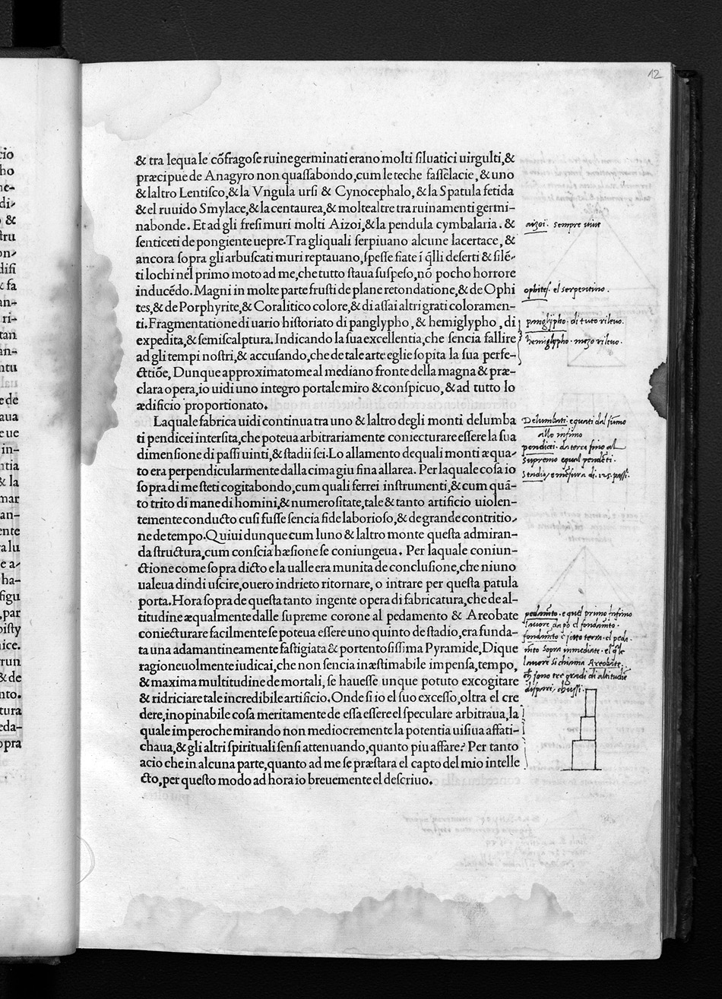

Signature b4r
Folio 12r, Quire b

British Library, London — C.60.o.12
HIGH

Biblioteca degli Intronati, Siena — O.III.38
HIGH
Vision Reading (Phase 3 deep analysis)
Primary hand: Multiple · Hands: 3 · Type: woodcut_page · Sig: b5v
Woodcut: Twin inscribed monuments (D.AMBIG.D.D.)
Two rectangular stone monuments or bases, each with a circular wreath/garland design containing an inscription. Left monument: 'DI AMBIG[...]'. Right monument: 'BCVIS D INPOLI TATIS'. These are Colonna's invented funerary or dedicatory monuments with enigmatic Latin inscriptions.
Condition: Good
Transcription Attempts
top_right · Latin · LOW
Gratia cum [...] Historiam [...] et [...] musli enor [...]
'Historiam' (history). Reader classifying the scene as historical
right_margin · Latin/Italian · LOW
duomo [...] solido [...] Marmoro [...] corona Senatoris [...] Telluriano [...] dextra porra [...]
'Marmoro' (marble), 'corona Senatoris' (senator's crown), 'Telluriano' (earthly/tellurian). Reader identifying materials and institutional symbolism
bottom · Latin · LOW
Di [...] Danti [...] Anti Biginius [...] [...] hoc [...] et [...] Amphichedy [...]
Attempting to decode the monument inscriptions. 'Amphichedy' may be a Greek-derived interpretive term
Scholarly Significance
The twin monuments woodcut attracted attempts to decode the enigmatic inscriptions. The annotations show a reader trying to parse AMBIG(uus) and INPOLI(tia) — ambiguity and impoliteness/roughness. This is the HP at its most cryptic, and the annotations document real-time interpretive struggle with Colonna's invented epigraphy.
Cross-references: Photo 35 (p.22, horse and rider sarcophagus), Russell thesis Ch. 4 (inscriptions)
Vision reading (Claude Code, Phase 3)
Annotations
INDEX_ENTRY (2)
Index Entry
“obsidie”
117
præcipuamente che nella nostra ætate gli uernacoli, proprii, & patrii uocabuli, & dilarte ædificatoria
peculiari, sono cum gli ueri homini, sepulti & extincti. (b4r)
[Without a doubt, I lack the knowledge that would allow me to describe it perfectly,] especially since in
our time the proper vernacular and native terms peculiar to the art of architecture are buried and
extinct, along with the true men. (G 31)
Even so, the next marginalium to appear is a remark on the use of ob...
Russell, PhD Thesis, p. 128 (Ch. 6)
Hand Primary: Anonymous
Index Entry
“licet”
the Murana of my love, the
patron and revered empress of my whole being. (G 369)21
The annotators of the linked copies also take a different approach to the architectural
content of the text. While Siena contains elegant architectural diagrams, Sydney contains no
illustrations of any kind. Yet even if the Sydney annotator’s interest is not expressed in
drawings, he takes note of architectural vocabulary, again making use of ‘licet’. For example:
b3r: lithogliphi .l. Saxi sculptura
...
Russell, PhD Thesis, p. 238 (Ch. 9)
Index Entry
“obsidie”
117
præcipuamente che nella nostra ætate gli uernacoli, proprii, & patrii uocabuli, & dilarte ædificatoria
peculiari, sono cum gli ueri homini, sepulti & extincti. (b4r)
[Without a doubt, I lack the knowledge that would allow me to describe it perfectly,] especially since in
our time the proper vernacular and native terms peculiar to the art of architecture are buried and
extinct, along with the true men. (G 31)
Even so, the next marginalium to appear is a remark on the use of ob...
Russell, PhD Thesis, p. 128 (Ch. 6)
Hand Primary: Anonymous
Index Entry
“licet”
the Murana of my love, the
patron and revered empress of my whole being. (G 369)21
The annotators of the linked copies also take a different approach to the architectural
content of the text. While Siena contains elegant architectural diagrams, Sydney contains no
illustrations of any kind. Yet even if the Sydney annotator’s interest is not expressed in
drawings, he takes note of architectural vocabulary, again making use of ‘licet’. For example:
b3r: lithogliphi .l. Saxi sculptura
...
Russell, PhD Thesis, p. 238 (Ch. 9)